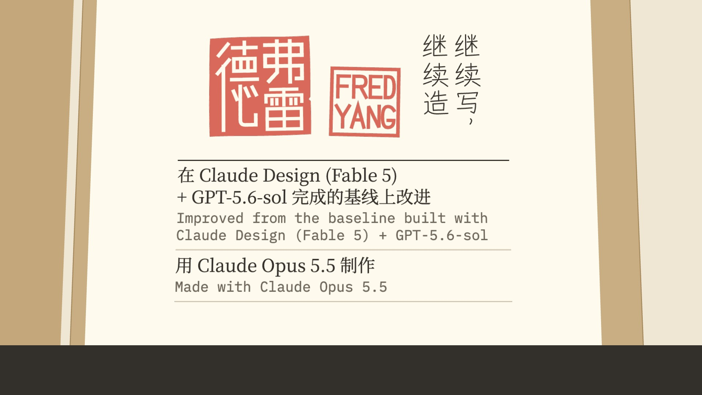
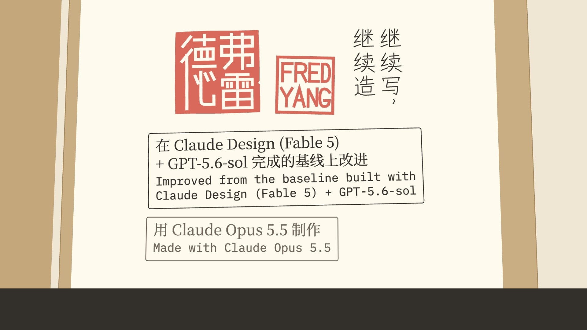
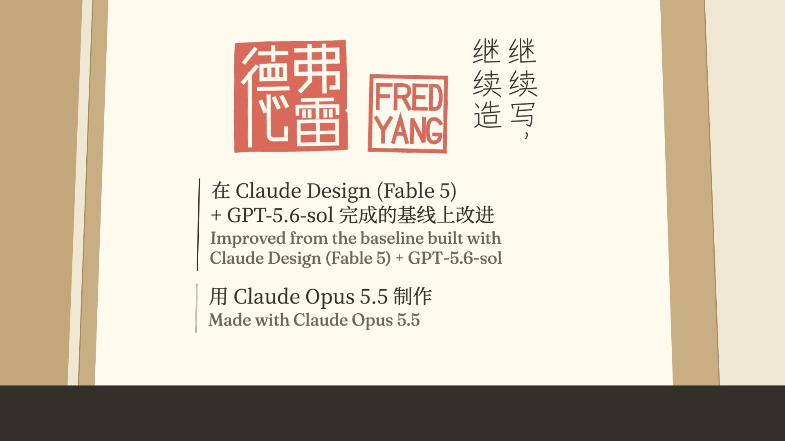

Three ways to set the credits, in the site's own register
v1.4 set the two credits big, centred and semibold, so they competed with the seals and didn't look like the site. All three treatments here take the site's own way of setting facts and labels, from the dossier and About's specimen card. They sit in a column under the lockup, left-aligned and at regular weight, with the Chinese in ink and the English in --soft. They are set as small as a phone allows: at 390 px wide, the Chinese is about 9.4 px and the English about 7.6 px. The words, their order, the seals, 继续写，继续造 and the hold (2.73 s after the last line) are unchanged. Long lines break where the phrase does. Each treatment is shown on the promo's last frame, at full size and at 390 px wide (a 16:9 video in a portrait feed). The film is rendered with the first. To switch, set ENDCARD in end.js (or add ?end=stamps / ?end=entries to both pages) and re-render.
1 · Specimen fields recommended, and what v1.5 is rendered with
About's specimen card sets its facts as ruled rows: an ink rule over the first row and hairlines between the rest, with a Chinese line over an English line in IBM Plex Mono. The credits take that form in a column centred under the lockup. Why it's first: it is the dossier's own rule for writing on a sheet ("line-led: ruled entries … no boxes and no washes"), and the rules are the only marks it adds. The seals stay the only solid shapes on the sheet, so they lead and the credits read as a record under them. The mono English is the site's voice for facts.

2 · Stamped facts
The dossier stamps a project's facts onto its sheet: thin boxes in IBM Plex Mono, the first in ink and tipped a degree, the rest in --soft. Each credit becomes one stamp. It reads as filed and official. Against it: two more boxed shapes under two boxed seals turn the sheet into a row of stamps, and the frames make the block heavier than the rows do.

3 · Ruled entries
A project page's sections are ruled entries: a line of ink down the left, with the writing beside it. Each credit becomes an entry, the first ruled in ink and the next in --line-strong, with the English in Fraunces (the site's text face) rather than mono. It is the softest of the three. Against it: without a mono line it reads as prose more than as facts, and the vertical rules echo the tagline's vertical column rather than sitting under it.
